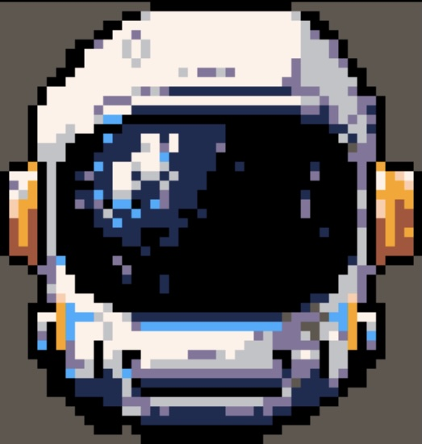
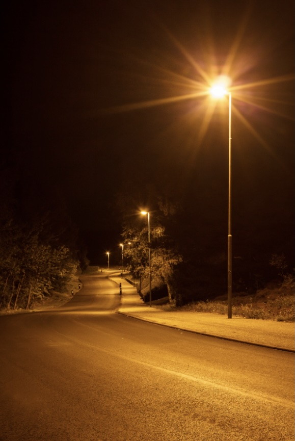

My partner's image was a pixel artwork of a space hemelt that they created for a club project. It was a simple image but it was interesting because there was something that drew me in. It was really intriguing. I wanted to understand why the image was there and what my partner was going to showcase with that image. The mysterious aspects of the image was what was going to happen next, would it be the series of pixel art? What was this artwork for? I didn't have much suggestions since they let me know they were going to change it. However, from my perspective it was something that by itself was mysterious and intriguing but I don't know where the project will go if more images are added.

Figure 1: Kaylah Allison-Ball, 4th year
To start off, this image is not one that I have taken myself. However, it does represent my topic, it was interesing to me because I felt like it reminds the audience of their own unique experience. This image acts of a reminder on a childhood that was spent playing outdoors. At the beginning when coming up with ideas, my idea was about things we leave behind, however Professor Mead gave me the idea of what we leave behind as we grew up. This lead me of childhood memories/routines we leave behind as we grew up, this could be the routine of playing outside with friends or even the old posters of the musician you liked growing up. I think this tells a story about me since I am more of a nostalgic person and reminisce of past years, but I am sure this is something audience memebers can relate to. Since the images I have aren't mine, I need to find images that give off that nostalgic vibe I am going for.

Figure 2: Rebeca Grier, 4th year
Viusal Thinking Strategies Research
October 26, 2026
Images and interactivity can go hand and hand. After reading the article of 10 Intriguing Photographs to Teach Cose Reading and Visual Thinking Skills, it reminds the audience of the importance of slowing down and noticing the details. The skill of observation allows the audience to look more in depth of what is being shown. I took a look at websites at the awwwards.com and found a very interesting site called Emotion Agency that won the site of the day on the 22nd of October. It was a very cool website but after further looking at it, the images/visuals started becoming a distraction to the point that I didn't even know what the objective of the site was. When noticing all the small details of the visuals, its hard to overlook them and read the text explaining the website. This site reinforced my saying of how images and interactivity can go hand and hand, with a main focus on either visual or text, the website can be overwhelming.
Overlays, we have all comes across a website where a overlay pop-up appears. I had the delight of reading the article, Best Practices for Modals/Overlays/Dialog Windows. This was a good read and reminder in how to use overlays, since it can be helpful in conforming an action, viewing an image in larger detail, or promting user input. However, it is something that can be distracting and affect the user experience. Being interested in UI/UX design, this strengten the idea of every interaction having a purpose. It reminded me to be intentional when using overlays and how to use them when designing my own projects. Good design isn't just simply if it looks good, its also how easy it is for a user to navigate and use.
After reading Best Practices for Form Design one thing that stood out to me was the idea of not making users fill out unnecessary information. This stood out to me because we have all been there filling out forms and thinking, when does this end? That is obviously not what a designer would want their user to feel. Before reading this article, I knew it long forms was something I wasn't a fan of but it made me think about how it does affect if I actually want to fill out the form. One specfic memory that comes up is last fall I joined a club that had to make a google form, my teammate wanted to more questions but I had to step in and let them know that more than likely the more questions we add, the less people will actually want to fill it out. I decided to link my old google form, the reason why is because I think it was balanced in not being overwhelming for the user but also allows my former team to get good information.